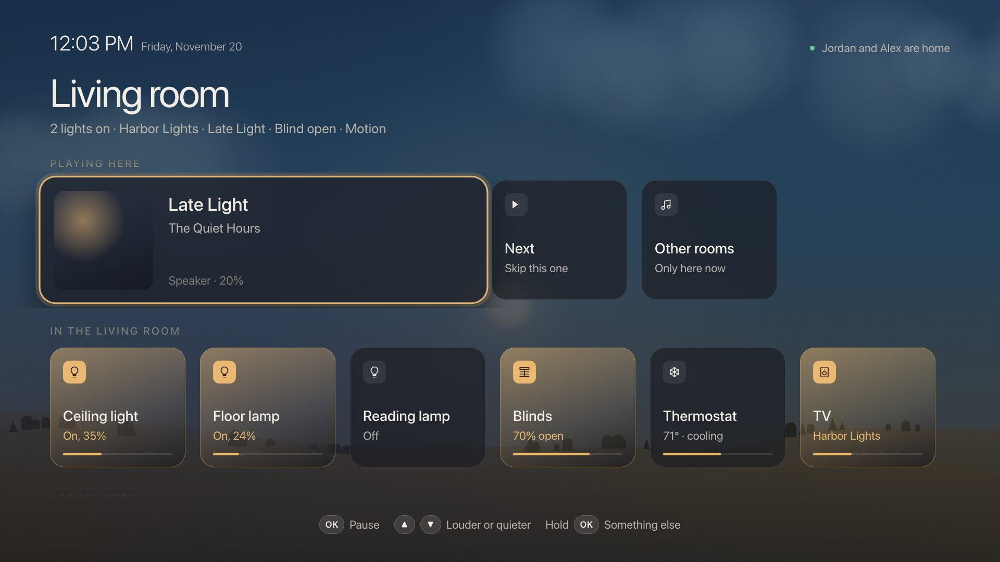
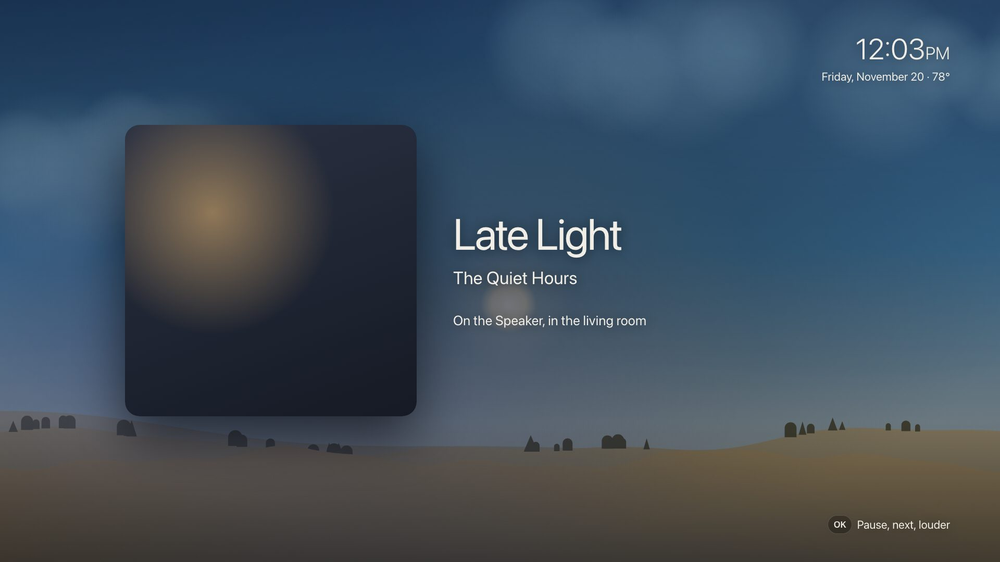
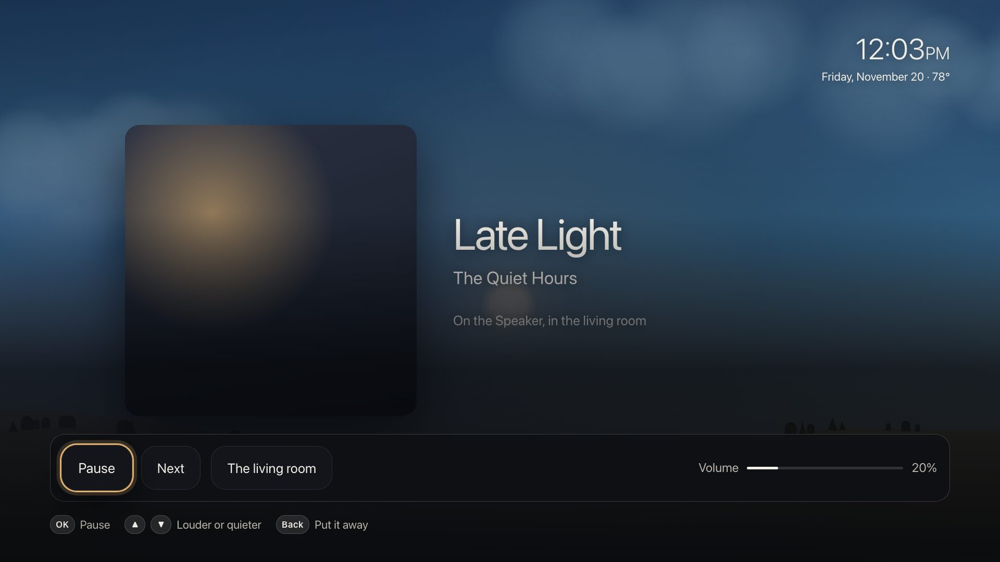

Music leads the room as a row of its own (tv-music A). Everything else is under it. This is what the TV shows from the moment anybody presses a key, and for three minutes after the last one, the same three minutes as a house with no music on.

Only at rest does the record fill the screen (tv-music B). It is the screen the person wanted all along, so the three minutes are spent waiting for it.

Pause, Next and The living room. Anything more is behind The living room, which wakes the TV back to step 1, and the clock starts again.